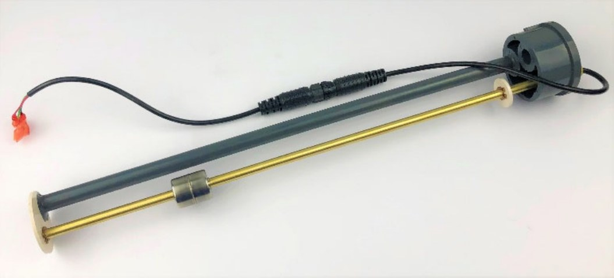

Doc no. MOC-TSB-19-04 // Vol. 19 No. 04 // Dec 19, 2019 // Transmission
Cold Weather Sensor For Smart Tech II ATF Machines
MOC has developed a new sensor for use in the Smart Tech II ATF machines to counter issues associated with transmission fluid in cold weather. The sensor is for the Smart Tech II ATF machines using the New Fluid Tank and is recommended for machines operating in areas that have cold winters. The new sensor is Part No. 94854. For example, in some cold weather conditions, ATF fluid may get cold causing the viscosity to increase. If this occurs, in some cases, it can cause the light-weight float sensor to stick as the fluid level decreases. In this situation, the Smart Tech II ATF machine will stop the service and warn the user that there is an error with the sensor. To alleviate this situation, the new Cold Weather sensor has a stainless-steel float which can overcome the viscosity of the fluid in cold weather conditions. MOC has also created 2 new part numbers for Smart Tech II ATF machines built with this cold weather sensor.
What's new
Contact
For more information, contact the Machine & Equipment Department at 866.244.6621.

Part numbers
| Part No. | Description | Notes |
|---|---|---|
| 95850C | MACHINE, COLD WEATHER, SMART TECH II ATF | |
| 95890C | MACHINE, COLD WEATHER, SMART TECH II ATF W/OB DISPENSER | |
| 94854 | SENSOR ASSEMBLY, SMART TECH II, COLD WEATHER |